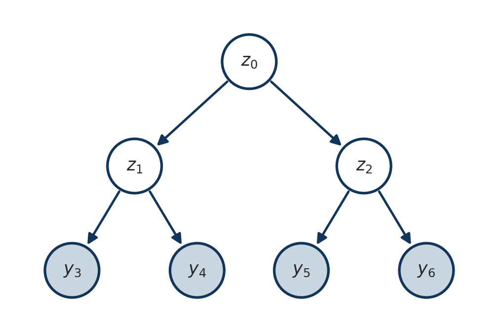
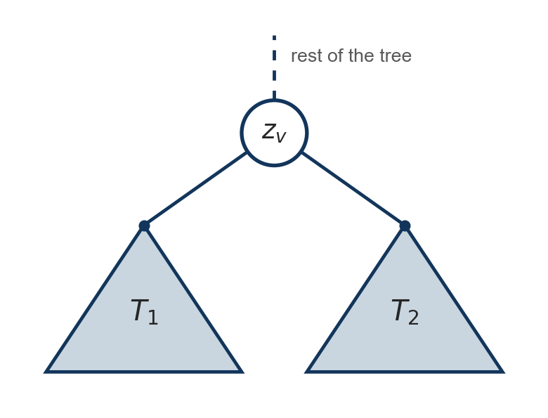
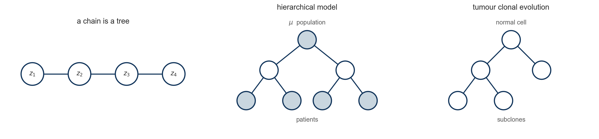
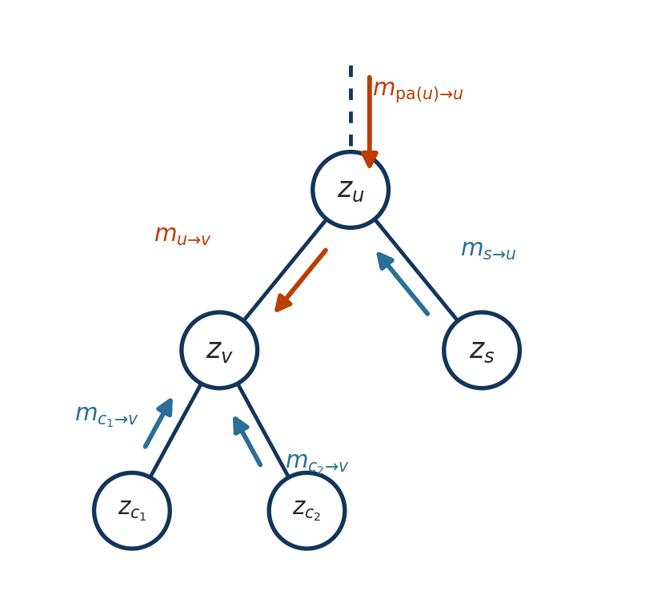
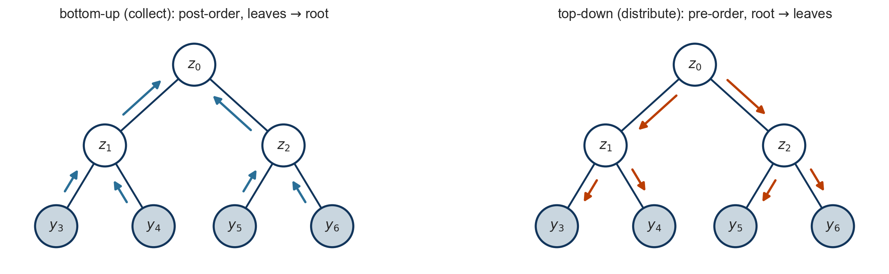
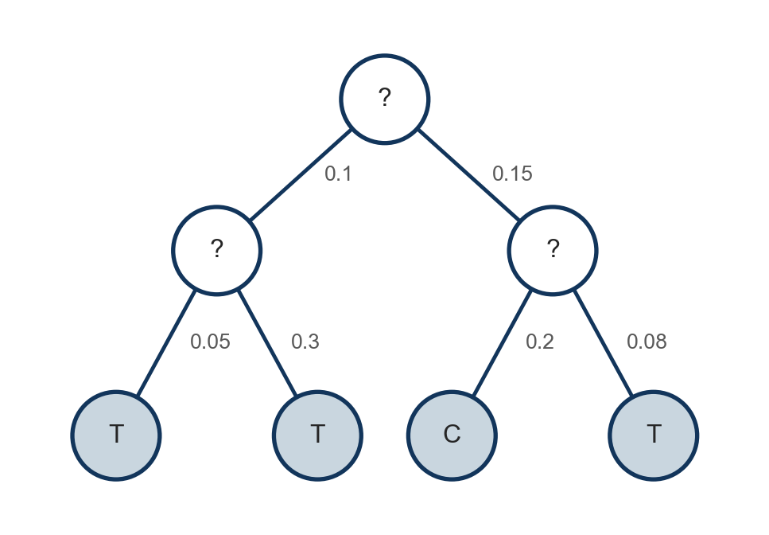
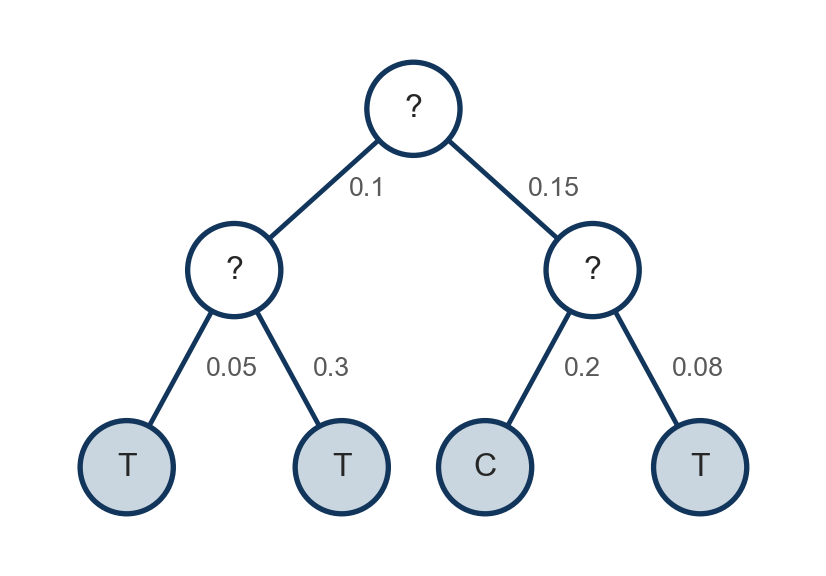
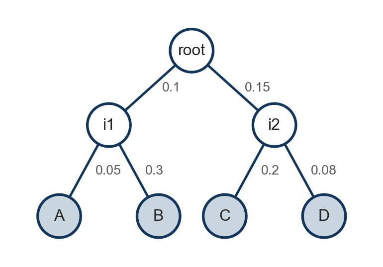
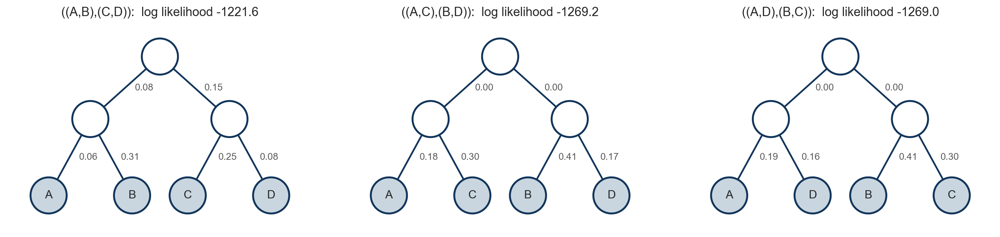

Belief propagation on trees
Department of Biostatistics and Computational Biology, University of Rochester Medical Center
Forward-backward turned a sum over \(K^T\) state paths into \(O(TK^2)\) work by pushing each sum as far inward as it would go.
In Lab 4 you built the data structure, wrote the two traversals, and simulated an alignment down a phylogeny. Today we hang the inference on that code, then apply it to compute a likelihood of a phylogeny.
An undirected graph is a tree if it is connected and has no cycles. Equivalently:
A tree structured model is a joint distribution whose factors each involve one node or one edge of some tree. The HMM is one: its factors are \(p(z_t \mid z_{t-1})\) on the edges and \(p(y_t \mid z_t)\) at the nodes, and the tree is a line.

Latent variables at the internal nodes, observations at the leaves. The HMM had one observation hanging off each latent variable; here the shape is richer, but the factorization is the same kind of object.
Exercise. Write down the joint distribution \(p(\mathbf{z}, \mathbf{y})\) of this model by following the arrows: one factor per node, conditioned on whatever points at it. How many terms does the likelihood \(p(\mathbf{y})\) sum over if each \(z\) takes \(K\) values?
For a uniform message-passing notation, place a state \(z_v\) at every node and attach data through \(p(y_v \mid z_v)\). At an observed leaf, deterministic observation makes this equivalent to the collapsed picture on the previous slide.
Write \(\mathbf{z} = (z_1, \ldots, z_n)\) for the latent variables at the \(n\) nodes, one multivariate variable, and \(\mathbf{y}\) for the observations. For a directed tree with root \(r\), the chain rule along the arrows gives
\[ p(\mathbf{z}) = p(z_r) \prod_{v \neq r} p\big(z_v \mid z_{\text{pa}(v)}\big). \]
Each observation hangs off one node, so the joint with the data is
\[ p(\mathbf{z}, \mathbf{y}) = p(z_r) \prod_{v \neq r} p\big(z_v \mid z_{\text{pa}(v)}\big) \prod_{v} p(y_v \mid z_v), \]
where \(p(y_v \mid z_v) \equiv 1\) at a node with nothing observed. Each factor touches one node or one edge, and that is all the algorithm will use.

Let \(v\) be a node and let \(T_1, T_2\) be two subtrees hanging off it. In a tree structured model,
\[ p(z_{T_1}, z_{T_2} \mid z_v) = p(z_{T_1} \mid z_v) \; p(z_{T_2} \mid z_v). \]
The likelihood of the leaves sums the joint over every latent node:
\[ p(\mathbf{y}) = \sum_{z_1} \cdots \sum_{z_n} p(z_r) \prod_{v \neq r} p\big(z_v \mid z_{\text{pa}(v)}\big) \prod_{v} p(y_v \mid z_v). \]
\(K^n\) terms, where \(n\) is now the number of internal nodes rather than the length of a sequence.
Same disease, same cure. Push the sums inward.

Four leaves, three latent nodes, states in \(\{1, \dots, K\}\). Nothing is observed at the latent nodes themselves.
\[ p(\mathbf{y}) = \sum_{z_0} \sum_{z_1} \sum_{z_2} p(z_0) \, p(z_1 \mid z_0) \, p(z_2 \mid z_0) \, p(y_3 \mid z_1) \, p(y_4 \mid z_1) \, p(y_5 \mid z_2) \, p(y_6 \mid z_2) \]
\(z_1\) appears in three factors, \(z_2\) in three others, and none of the six involves both. Push each sum through everything it does not touch:
\[ p(\mathbf{y}) = \sum_{z_0} p(z_0) \underbrace{\Big[ \sum_{z_1} p(z_1 \mid z_0) \, p(y_3 \mid z_1) \, p(y_4 \mid z_1) \Big]}_{m_{1 \to 0}(z_0)} \underbrace{\Big[ \sum_{z_2} p(z_2 \mid z_0) \, p(y_5 \mid z_2) \, p(y_6 \mid z_2) \Big]}_{m_{2 \to 0}(z_0)}. \]
Each bracket depends only on \(z_0\) and only on the subtree below one child. Three sums of \(K^2\) terms instead of one sum of \(K^3\).
Inside the first bracket, \(p(y_3 \mid z_1)\) is itself a function of \(z_1\) alone, “what leaf 3 says about \(z_1\)”. Call it \(m_{3 \to 1}(z_1)\). Then the bracket is
\[ m_{1 \to 0}(z_0) = \sum_{z_1} p(z_1 \mid z_0) \, m_{3 \to 1}(z_1) \, m_{4 \to 1}(z_1), \]
the same shape one level up. Define, for every non-root node \(v\) with parent \(u\),
\[ \boxed{\; m_{v \to u}(z_u) = \sum_{z_v} p(z_v \mid z_u) \, p(y_v \mid z_v) \prod_{c \,\in\, \text{children}(v)} m_{c \to v}(z_v) \;} \]
Write \(\mathbf{y}_{\lfloor v \rfloor}\) for the observations in the subtree rooted at \(v\), \(v\) included.
\[ m_{v \to u}(z_u) = p(\mathbf{y}_{\lfloor v \rfloor} \mid z_u), \qquad p(y_v \mid z_v) \prod_{c \,\in\, \text{children}(v)} m_{c \to v}(z_v) = p(\mathbf{y}_{\lfloor v \rfloor} \mid z_v). \]
Run the rule once per non-root node, children before parents. At the root nothing is left to send, so sum instead:
\[ p(\mathbf{y}) = \sum_{z_r} p(z_r) \, \underbrace{p(y_r \mid z_r) \prod_{c \,\in\, \text{children}(r)} m_{c \to r}(z_r)}_{p(\mathbf{y}_{\lfloor r \rfloor} \mid z_r) \;=\; p(\mathbf{y} \mid z_r)}. \]

The posterior at an internal node \(v\) is the joint with everything except \(z_v\) summed out. Everything below \(v\) is already in hand. What is missing is everything above:
\[ p(z_v, \mathbf{y}) \;=\; \underbrace{p(\mathbf{y}_{\lceil v \rceil}, z_v)}_{\text{from the parent } u} \; \underbrace{p(y_v \mid z_v) \prod_{c \,\in\, \text{children}(v)} m_{c \to v}(z_v)}_{p(\mathbf{y}_{\lfloor v \rfloor} \mid z_v), \text{ from the children of } v} \]
Write \(\mathbf{y}_{\lceil v \rceil} := \mathbf{y} \setminus \mathbf{y}_{\lfloor v \rfloor}\) for the complement: every observation not in the subtree at \(v\). Given \(z_v\) the two sides are independent, so the joint factorizes as shown, and \(p(z_v \mid \mathbf{y})\) is this divided by \(p(\mathbf{y})\).
The subtree likelihood \(p(\mathbf{y}_{\lfloor v \rfloor} \mid z_v)\) is available after the bottom-up pass. The missing term is \(m_{u \to v}(z_v) := p(\mathbf{y}_{\lceil v \rceil}, z_v)\): the data outside \(v\)’s subtree, jointly with \(z_v\).
“Above \(v\)” is the rest of the tree once the edge \((u, v)\) is cut. Seen from \(u\), that is three things, all functions of \(z_u\): \(u\)’s own evidence, whatever came down to \(u\) from its parent, and the subtrees of \(v\)’s siblings. Multiply them, attach the edge, and sum out \(z_u\):
\[ \boxed{\; m_{u \to v}(z_v) = \sum_{z_u} p(z_v \mid z_u) \, \underbrace{p(y_u \mid z_u)}_{\text{evidence at } u} \, \underbrace{m_{\text{pa}(u) \to u}(z_u)}_{\text{from above } u} \underbrace{\prod_{s \,\in\, \text{children}(u),\; s \neq v} m_{s \to u}(z_u)}_{\text{from the siblings of } v} \;} \]
Write \(\mathcal{N}(i)\) for the neighbours of \(i\), parent and children alike. Both boxed formulas are the same statement:
\[ \boxed{\; m_{i \to j}(z_j) = \sum_{z_i} p(z_{\text{ch}} \mid z_{\text{pa}}) \, p(y_i \mid z_i) \prod_{k \in \mathcal{N}(i) \setminus j} m_{k \to i}(z_i) \;} \]
where \((\text{pa}, \text{ch})\) is the edge \(\{i, j\}\) read in the direction of its arrow, and the root’s prior counts as a message arriving from above.

Pick any node as root. Pass messages bottom-up, then top-down. Each edge carries one message in each direction: \(2(n - 1)\) messages at \(O(K^2)\) apiece, and then every marginal in the model is a product of vectors.
Throughout, \(v\) is a node and \(u = \text{pa}(v)\) is its parent, so \(m_{v \to u}\) travels up and \(m_{u \to v}\) travels down. Everything needed is the factorization of \(p(\mathbf{z}, \mathbf{y})\) and the separation property, used once per step.
In every case the ancestors are unobserved. That is what makes it a latent variable problem, and its inference algorithm, published in 1981, is exactly the bottom-up pass we just derived.
tree = build_tree()
rng = np.random.default_rng(5)
simulate_sites(tree, n_sites=300, rng=rng)
by_name = {v.name: v for v in preorder(tree)}
for name in "ABCD":
print(f"{name} {to_string(by_name[name].seq[:48])} ...")A GTATCTCCTAACGCAAAAATAGTGCGCTACATACGCGGGATGTCCTAA ...
B GTAACCACTACTGCCTTAACGATTCGCTACATACGCGGCATGTCCTAA ...
C GCAACGGTTACCGGATAAAAACTACCCGGTTTAGCAGGGGGGGTCTAA ...
D GTATCGGCTACCGCATAAATACTTCCCAATTGAGCACGTATGATCTAA ...
| taxa | unrooted topologies |
|---|---|
| 4 | 3 |
| 5 | 15 |
| 10 | 2.027e+06 |
| 20 | 2.216e+20 |
| 50 | 2.838e+74 |
Fifty taxa, a small study, gives \(10^{74}\) topologies. The tree can no more be found by enumeration than the state path could. Every search strategy relies on scoring a candidate tree fast, and that is what the rest of today buys.
A site evolves along a branch as a continuous time Markov chain on \(\{A, C, G, T\}\) with rate matrix \(Q\), so the transition matrix for a branch of length \(t\) is \(P(t) = e^{Qt}\), with
\[ P_{ab}(t) = p(\text{descendant} = b \mid \text{ancestor} = a). \]
\[ p(y_A, y_B, y_C, y_D \mid \tau, t) = \sum_{z_{\text{root}}} \sum_{z_{i_1}} \sum_{z_{i_2}} \pi_{z_{\text{root}}} \prod_{v \neq \text{root}} P_{z_{\text{pa}(v)} z_v}(t_v). \]
Define the conditional likelihood of the subtree below \(v\), given that \(v\) is in state \(s\):
\[ L_v(s) = p\big(\text{leaves below } v \mid z_v = s\big). \]
\[ \begin{aligned} \textbf{leaf:} \quad & L_v(s) = \mathbb{1}[s = y_v] \\ \textbf{internal:} \quad & L_v(s) = \prod_{c \,\in\, \text{children}(v)} \Big( \sum_{s'} P_{s s'}(t_c) \, L_c(s') \Big) \\ \textbf{root:} \quad & p(\mathbf{y}) = \sum_s \pi_s \, L_{\text{root}}(s). \end{aligned} \]
One post-order traversal. \(O(nK^2)\) instead of \(O(K^n)\).
Let \(v\) be an internal node in state \(s\), with children \(c\). Starting from the bottom-up message rule:
| belief propagation | Felsenstein pruning |
|---|---|
| \(p(y_v \mid z_v=s) \prod_c m_{c \to v}(s)\) | conditional likelihood \(L_v(s)\) |
| \(m_{c \to v}(s)=\sum_{s'}p(z_c=s'\mid z_v=s)L_c(s')\) | \(\sum_{s'} P_{ss'}(t_c)L_c(s')\) |
| evidence \(p(y_v \mid z_v=s)\) | \(\mathbb{1}[s=y_v]\) at a leaf, \(1\) at an internal node |
| conditional \(p(z_v \mid z_{\text{pa}(v)})\) | transition matrix \(P(t_v)\) |
| \(p(\mathbf{y})\) at the root | \(\sum_s \pi_s L_{\text{root}}(s)\) |
Felsenstein published this in 1981; Pearl’s belief propagation came in 1982. Two communities derived the same algorithm within a year of each other, and it took a decade for anyone to notice.

Column \(s\) of the alignment is \(\mathbf{y}^{(s)} = (y_A, y_B, y_C, y_D)\), shown at the leaves, with the branch lengths on the branches. Marginalize out the three ancestors.
jc69, and finish with \(\sum_a \pi_a L_{\text{root}}(a)\).for the record, column 1 is TTCT and p(y^(s)) = 7.938823e-03
A GTATCTCCTAACGCAAAAATAGTGCGCTACATACGC ...
B GTAACCACTACTGCCTTAACGATTCGCTACATACGC ...
C GCAACGGTTACCGGATAAAAACTACCCGGTTTAGCA ...
D GTATCGGCTACCGCATAAATACTTCCCAATTGAGCA ...
300 columnsSites are assumed independent given the tree, so the log likelihood of the alignment is the sum of the column log likelihoods, each one a bottom-up pass on this tree with these branch lengths.
def set_site(root, site, pi=np.full(4, 0.25)):
for v in preorder(root):
if v.is_leaf():
v.pot = np.zeros(4); v.pot[v.seq[site]] = 1.0 # the leaf's nucleotide is observed: a point mass
else:
v.pot = np.ones(4) # nothing observed at an internal node
if v.parent is not None:
v.edge = jc69(v.branch_length) # p(z_v | z_pa) = P(t_v)
root.pot = root.pot * pi # the prior, folded into the root
def site_likelihood(root, site):
set_site(root, site)
return collect(root)
def alignment_loglik(root, n_sites):
return sum(np.log(site_likelihood(root, s)) for s in range(n_sites))
print(f"log p(y | tau, t) = {alignment_loglik(tree, 300):.2f}")log p(y | tau, t) = -1222.80Scale every branch length by a common factor and score the alignment again. The data were simulated at factor \(1\).
| factor | log likelihood |
|---|---|
| 0.25 | -1367.8 |
| 0.5 | -1269.4 |
| 1.0 | -1222.8 |
| 2.0 | -1266.8 |
| 4.0 | -1430.0 |
Four taxa admit three unrooted topologies. Score each on the same leaf rows.

The top-down pass gives, for every internal node \(v\) and column \(s\), the posterior over its nucleotide given that column:
\[ p(z_v^{(s)} \mid \mathbf{y}^{(s)}) = \frac{p(\mathbf{y}_{\lceil v \rceil}^{(s)}, z_v^{(s)}) \; p(\mathbf{y}_{\lfloor v \rfloor}^{(s)} \mid z_v^{(s)})}{p(\mathbf{y}^{(s)})}. \]
| node \(v\) | A | C | G | T | argmax | truth |
|---|---|---|---|---|---|---|
| root | 0.004 | 0.015 | 0.004 | 0.978 | T | T |
| i1 | 0.000 | 0.001 | 0.000 | 0.999 | T | T |
| i2 | 0.002 | 0.034 | 0.002 | 0.961 | T | T |
T T C T. Each row is \(p(z_v^{(s)} \mid \mathbf{y}^{(s)})\) over the four nucleotides; the largest entry is the posterior mode for that node, one node at a time.i2 sees C from one child and T from the other, yet lands on T with probability \(0.96\). Three things combine. From below, D says T along a short branch, where a change is unlikely, while C says C along a branch of length \(0.20\), where a substitution has probability about \(0.18\), so the dissent is discounted. From above, \(p(\mathbf{y}_{\lceil i_2 \rceil}, z_{i_2})\) carries A and B, both T, through i1 and the root, and i1 is almost certainly T itself. Below and above both point to T; the lone C on a long branch cannot outweigh them.Repeat for every column and grade against the ancestral rows your simulator kept.
def ancestral_posteriors(root, n_sites):
"""post[name][s] is p(z_v^(s) | y^(s)) for internal node v and column s."""
post = {v.name: np.zeros((n_sites, 4)) for v in preorder(root) if not v.is_leaf()}
for s in range(n_sites):
set_site(root, s); collect(root); distribute(root); marginals(root)
for v in preorder(root):
if not v.is_leaf(): post[v.name][s] = v.marginal
return post
post = ancestral_posteriors(tree, 300)
for name in ["i1", "i2", "root"]:
truth = by_name[name].seq
print(f"{name:>5}: argmax correct {np.mean(post[name].argmax(1) == truth):.1%},"
f" mean max posterior {post[name].max(1).mean():.3f}") i1: argmax correct 94.7%, mean max posterior 0.959
i2: argmax correct 93.3%, mean max posterior 0.953
root: argmax correct 88.7%, mean max posterior 0.888i1 sits \(0.05\) from A, so it nearly always carries A’s nucleotide and the posterior knows it. The root is the hardest: no leaf is close to it, and its evidence arrives through two internal nodes that are themselves uncertain.Six columns where the leaves disagree. \(\mathbf{y}^{(s)}\) is column \(s\); only entries above \(0.005\) are shown.
| \(s\) | \(\mathbf{y}^{(s)}\) (A B C D) | true \(z_{i_1}^{(s)}\) | \(p(z_{i_1}^{(s)} \mid \mathbf{y}^{(s)})\) | true \(z_{\text{root}}^{(s)}\) | \(p(z_{\text{root}}^{(s)} \mid \mathbf{y}^{(s)})\) |
|---|---|---|---|---|---|
| 1 | T T C T | T | T:1.00 | T | C:0.02 T:0.98 |
| 3 | T A A T | T | A:0.07 T:0.93 | T | A:0.07 C:0.01 G:0.01 T:0.92 |
| 5 | T C G G | C | A:0.01 C:0.11 G:0.14 T:0.74 | G | A:0.02 C:0.08 G:0.46 T:0.44 |
| 6 | C A G G | C | A:0.11 C:0.74 G:0.14 T:0.01 | G | A:0.08 C:0.44 G:0.46 T:0.02 |
| 7 | C C T C | C | C:1.00 | C | C:0.98 T:0.02 |
| 10 | A C C C | A | A:0.37 C:0.62 G:0.01 T:0.01 | C | A:0.22 C:0.76 G:0.01 T:0.01 |
i1 and \(0.46\) at the root on site \(5\), and \(0.37\) at i1 on site \(10\). Low, but not \(0.01\), and an outcome given \(0.11\) should come true in about one column in nine. This is what a calibrated posterior being wrong looks like, and a point estimate would hide it.Swap the sum in the bottom-up message for a max, and the pass returns the probability of the single best joint assignment of ancestral states instead of the sum over all of them.
column 1: max-product 7.584347e-03, brute force over 64 assignments 7.584347e-03| setting | name | messages |
|---|---|---|
| chain, sum | forward-backward | \(\alpha\), \(\beta\) |
| chain, max | Viterbi | \(\delta\) |
| phylogeny, collect only | Felsenstein pruning | \(L_v\) |
| general tree, sum | sum-product belief propagation | \(m_{i \to j}\) |
| general tree, max | max-product | \(m_{i \to j}\) |
Replacing \(\sum\) by \(\max\) everywhere turns each row into its decoding counterpart. All that is being used is that the operation distributes over products, and \(\max\) does so just as \(\sum\) does.
| question | pass | cost |
|---|---|---|
| \(p(\mathbf{y})\) for a tree, a topology, a site | collect | \(O(nK^2)\) |
| \(p(z_v \mid \mathbf{y})\) at every node | collect, then distribute | \(O(nK^2)\) |
| the most probable joint ancestral assignment | max-product | \(O(nK^2)\) |
In phylogenetic inference, which quantities can belief propagation sum out exactly, and which quantities still require optimization or search?